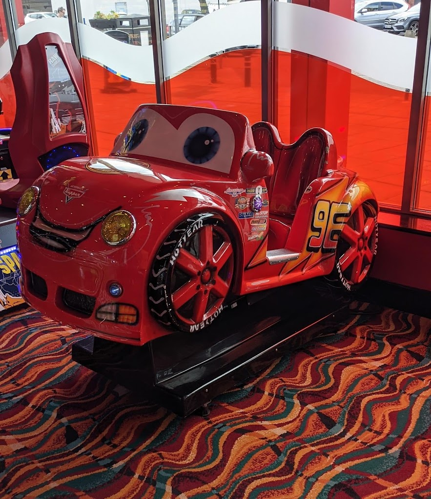
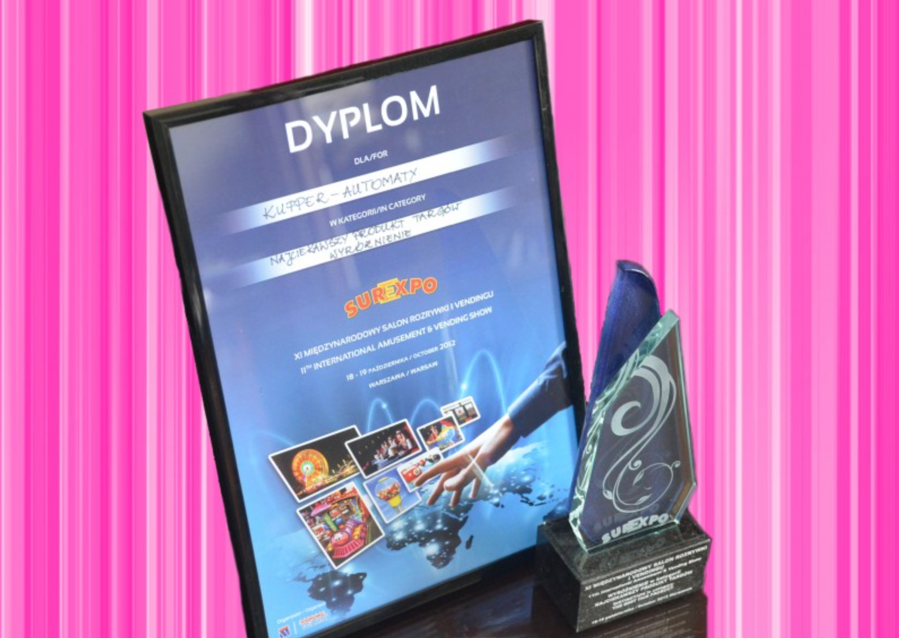
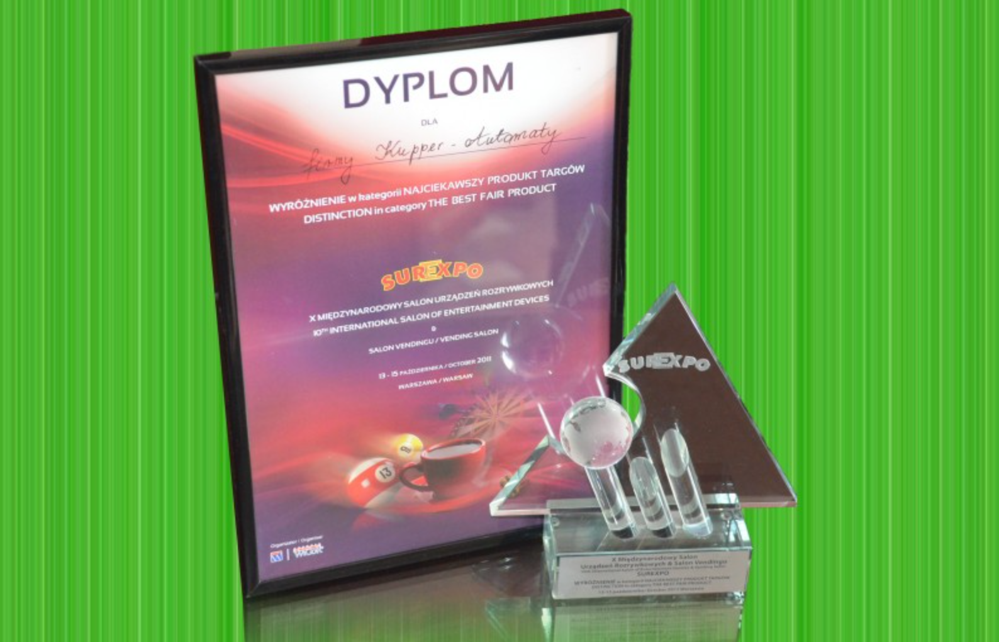
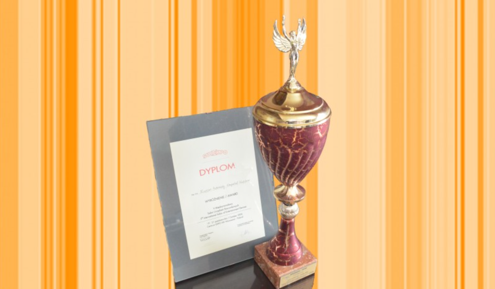
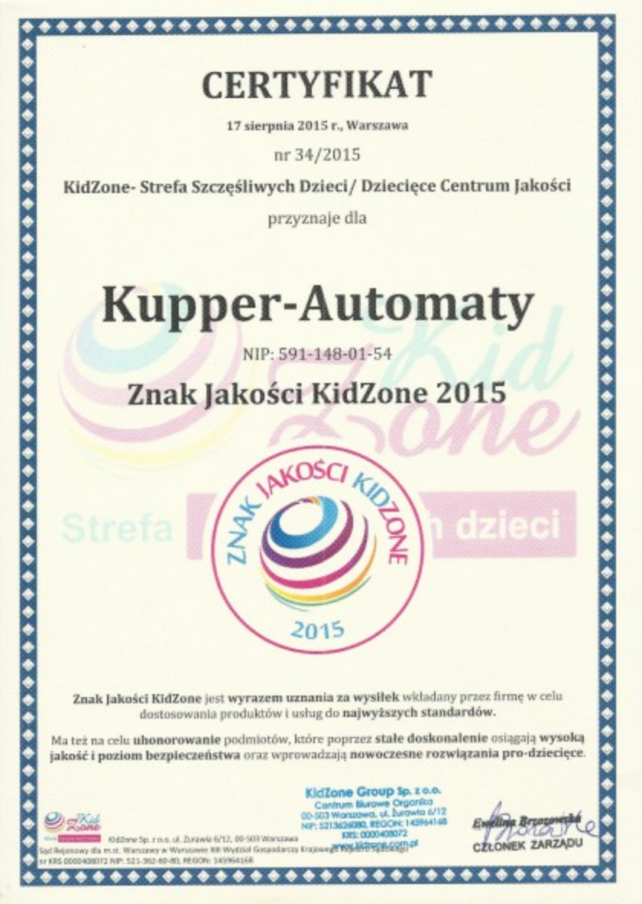

Firma Kupper Automaty istnieje od 1996 roku. Dzięki wieloletniej działalności zdobyliśmy bogate doświadczenie w zakresie współpracy z licznymi centrami handlowymi oraz sieciami sklepów, jak: GEANT-APSYS, TESCO, CARREFOUR, REAL, E.LECLERC, ECHO, AHOLD-HYPERNOVA, OBI, NOMI, KAUFLAND, MINIMAL, POLO-MARKET, EDEKA-DISCOUNT, ALFA-Gdańsk, PANORAMA - Poznań, i wieloma innymi na terenie Polski.
Posiadamy bogatą paletę automatów zachodnich producentów, ale też automaty własnej produkcji, oferując przy tym coraz to nowsze modele o dowolnej kolorystyce. Firma nasza jako jedyna idzie w kierunku zapewnienia kompleksowej rozrywki dla całej rodziny. U nas możesz zostawić dziecko pod opieką, uczestniczyć z nim w zabawie, jak również samemu zaznać wielu wrażeń przy tradycyjnych fliperach. Korzystając z naszej kompleksowej oferty mają Państwo zapewnioną wysoką jakość usług, a przede wszystkim satysfakcję Klientów, nie tylko tych najmłodszych. Dowodem naszej oryginalności są pierwsze w Polsce karuzele obsługowe o niespotykanych dotychczas rozmiarach w Centrach Handlowych, co potwierdzają artykuły branżowej gazety Interplay.
O sumienności i fachowości naszej firmy świadczy niejednokrotna wyłączność na sieci sklepów. Cieszymy się dobrą opinią i realizujemy sumienny serwis w kilkuset obiektach. Mamy nadzieję, że i Państwo będą mieli okazję już wkrótce przekonać się o naszym profesjonalizmie.
SUREXPO 2012 NAJCEKAWSZY PRODUKT TARGÓW 
SUREXPO 2011 NAJCIEKAWSZY PRODUKT NA TARGACH 
SUREXPO 2006 WYRÓŻNIENIE 
CERTYFIKAT KidZone 
Jako największy producent automatów bujanych dla dzieci, od wielu lat bierzemy udział w targach w Polsce i za granicą.
Wysoka jakość oferowanych produktów oraz szeroka gama modeli pozwoliła nam na zdobycie stałych kontrahentów i nieustanne pozyskiwanie nowych, nie tylko w Europie, ale i na świecie.
Posiadamy już stałych kontrahentów w Austrii, Niemczech, Francji, Londynie, Dubaju, Libanie, Jordanii, Grecji, Belgii, Szwecji, Bułgarii, Czechosłowacji, Ukrainie i Litwie.

Podesty systemowe
Wykładziny systemowe
Meble
Kanapy
Fronty meblowe